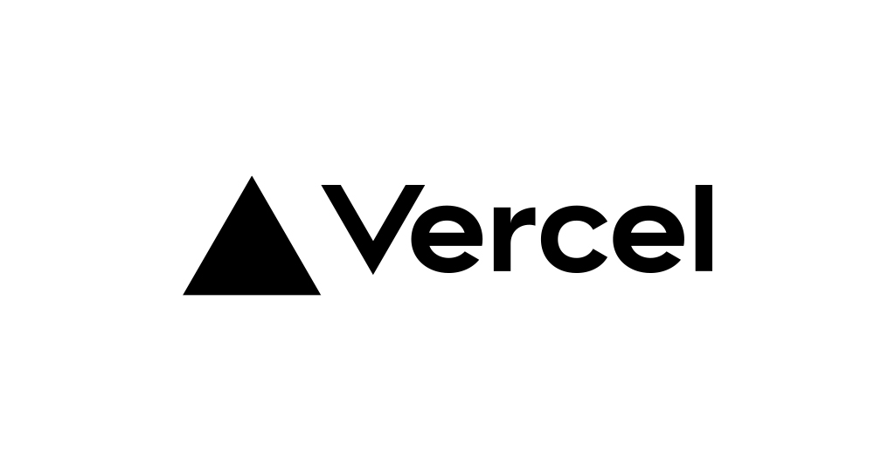

The Many Lies of Complexity
Join us on Discord!
I'm Eric Harrison
Software Engineer, CTO, Writer, Scotch Enthusiast
Cofounder and CTO of
Make Startups, Inc.
Data-driven entrepreneurship support, funding, and applications.Cofounder and CTO of
Docket
Platform and system of record for Legal TeamsCofounder and CTO of
Moonrise
Gig-economy staffing platform to make it easy for everyday
Americans to make some extra money.
- 3000+ W-2 Workers
- 18,000+ gigs
- $1.8M in payouts
early-stage software startups
I love to
invent new products, build new teams, automate boring tasks, improve efficiencies, design complex systems...
Write Software
Modern Web Development
is too complex
Programming is
supposed to be
Easy
Library Overload
| Front End | Back End | Infra |
|---|---|---|


|


|



|
This is stupid.

credit: xkcd #303
The Many Lies of Complexity
or, how to get off the crazy treadmill of weird software development practices that don't make any sense... like, WHY are we compiling web apps now? Who decided that was a good idea?
WARNING ⚠️
Obviously, this entire talk is my opinion, and that's from someone that has been a professional software engineer for over 25 years.
Lie 1:
It's the only way to scale
You are NOT Facebook
You won't have:
- 32,000+ teammates.
- Billions of users.
- Tons of different installations.
- World-wide deployment.
Solution 1
Just build the damned thing.
Prioritize Speed
- Go as fast as you can.
- Ignore shiny things.
- Focus on the business problem.
- Build what your customers want.
Solve scaling when you REACH scale.
Everything else is just noise.
Lie 2:
It's the best way to build.
Solution 2
Build with anything
Pick the smallest version and iterate:
- Your favorite language
- Your favorite database
- A single cheap VPS for server and database
- Use a framework if you have no other choice
Sometimes... you don't even have to "build"
What is the best tech stack for building an e-commerce site?

Lie 3+:
It's the best way to build.
1. Hello World in HTML
<html>
<head>
<title>Hello World!</title>
</head>
<body>
<h2>Hello world!</h2>
</body>
</html>
2. Hello World with NextJS (Part 1)
export default function RootLayout({
children,
}: {
children: React.ReactNode
}) {
return (
<html>
<head>
<title>Hello World!</title>
</head>
<body>
{children}
</body>
</html>
)
}
app/layout.tsx
2. Hello World with NextJS (Part 2)
export default function Page() {
return <h2>Hello World!</h2>
}
app/page.tsx
But Really...
3. Hello World with PHP
<html>
<head>
<title>Hello World!</title>
</head>
<body>
<?php include_once 'sub-page.php'; ?>
</body>
</html>
index.php
The Graveyard of Technology


Solution 3
Build with Simplicity
Your job is to solve a business problem with software.
Pick your favorite language, grab a nice looking template, and just get cranking.
Outcomes
1. You will fail.
2. You will succeed.
3. You will pivot.
Example
#!/bin/sh
echo "Starting MARS Recruiter..."
while [ true ]; do
cd microservice/ && node recruiter.js
sleep 1
done
mars.sh
Heavy Lifting Script
require("dotenv").config();
const mysql = require("mysql2/promise");
const connection = await mysql.createConnection({
/* db connection info */
});
const query = "SELECT id FROM shifts WHERE status = 'open' LIMIT 1";
const [rows,_fields] = await connection.execute(query);
if ( rows ) {
const processing_query = `
UPDATE shifts
SET status = 'processing'
WHERE id = ?
`;
await connection.execute(processing_query, [rows[0].id]);
/* ... actually offer this shift to someone... */
}
recruiter.js
Get it working
Optimize if you must.
Stick with standards
Native technologies are amazing today.
Progressive Enhancement still rocks!
htmx has changed the game!

htmx in 1 minute
htmx exists as a library to ask:
- Why should only
<a>and<form>be able to make HTTP requests? - Why should only
clickandsubmitevents trigger requests? - Why should only
GETandPOSTmethods be available? - Why does a request need to replace the entire screen?
htmx in 1 minute
Every Element is replaceable
<div id="parent_el">
<h4>Blog Title</h4>
<p>Blog content goes here. Hopefully you're a good writer.</p>
<button class="btn"
hx-target="#parent_el"
hx-get="/edit"
>Click to Edit Post</button>
</div>
/edit HTML Partial
<form
method="post"
action="/save"
hx-post="/save"
hx-target="#parent_el">
<label for="title">Title:</label>
<input type="text" name="title" id="title">
<textarea name="content"></textarea>
<input type="submit" value="Save Post">
</form>
Rendered Update
The .innerHTML of #parent_el
<div id="parent_el">
<form
method="post"
action="/save"
hx-post="/save"
hx-target="#parent_el">
<label for="title">Title:</label>
<input type="text" name="title" id="title">
<textarea name="content"></textarea>
<input type="submit" value="Save Post">
</form>
</div>
POST /save
Then, when the form is submitted to /save,
simply return back the originally rendered template, now with
your changes.
<div id="parent_el">
<h4>Updated Blog Title</h4>
<p>Better words with less tpyos!</p>
<button class="btn"
hx-target="#parent_el"
hx-get="/edit"
>Click to Edit Post</button>
</div>
Magic for Free
htmx provides progressive enhancement, attaching new "attributes" into your HTML pages. If you're building web applications that have a sane version of routing, you can begin to compose your product through custom HTML partials generated by your preferred framework's templating system.
<?php
// inside your_app_route.php
if (isset($headers["HX-Request"]) ) {
include_once "partials/{$sub_view}.php";
} else {
?>
<div class="content">
<!-- other junk omitted -->
<?php include_once "partials/default.php"; ?>
</div>
<?php
} // end of non-htmx template
Do Better
Don't contribute to the problem.
Questions?
Eric Harrison
|